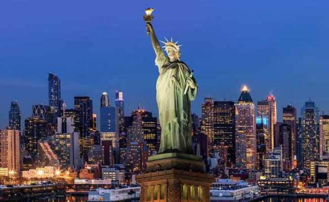

Sibusiso Nkosi

New York
1. The Buildings There’s a reason you’ll see so many people looking up when you visit New York! The architecture on display in NYC, both old and new, is truly something to behold. Buildings often take on a life of their own due to the passion and vision that goes into their design. Whether you want to see a skyscraper that’s over 1700 feet tall or a church that’s 200 years old, New York has got you covered! 2. The Food Whats kind of food do you LOVE? Well, chances are you can find it when you visit New York City. As an international hot spot, NYC is host to culinary experts from all across the globe. Some of the best Chefs in the world dream of coming to the Big Apple to serve up their signature dishes. Even if you’re not a foodie, you’ll still have your choice of tasty treats! The only question then is: Nathan’s or Gray’s?
3. The Theatre Some of the greatest actors and performers of the last 100 years made their name on a Broadway stage! The Theatre district in NYC (ever expanding as it may be) is home to amazing talent and entertainment. There are shows for every member of the family! And to top it all off, you may get to see someone before they hit the big time! But don’t feel tied down to Broadway. Seeing any theatre in the city is a great notch for everyone’s New York belt.
4. The Culture As home to citizens from all over the world, New York is a wonderful melting pot. Travel to most corners of Manhattan and you will find groups from various other countries who have carved out their own little piece of the American Dream. In just a 20 minute walk you can see travel through both Italy and China! There are cultural influences throughout NYC and they are perfect for opening your mind to new things!
5. The Experience This one may seem like a no brainer but it is very important! When you Visit New York City, you are stepping into another world. Another way of life! A life where the Subway can decide your whole day for you (whether you like it or not). Where parades are as regular as a monthly rain. A life where everything is within reach but you still have to work to grab it! It’s true what they say, if you can make it here, you can make it anywhere. Why do YOU love to Visit New York City? Let us know in the comments! And, if you’re already planning on visiting, come take a tour with us and see just how much we love this place!
| spanish prase | English prase |
|---|---|
| Hola | Hello |
| cómo estás | how are you |
| adiós | goodbye |
There are over 400 million Spanish speakers world-wide. With more than 33 million speakers, Spanish is the second largest language in the United States. Hispanics are the largest minority in the United States, with the majority of them being Spanish speakers. By learning Spanish, you'll be better able to communicate with Spanish speakers. Latin American countries are our most important trading partners. Being able to speak Spanish greatly enhances your resume. If you are bilingual you are more competitive in the workplace. Whether as a Spanish teacher or that of any discipline, you can make a difference in the field of education. Your language skills will enable you to interact with English Language Learners. You can travel to a Spanish-speaking country and really get to know the culture. Your ability to understand Spanish enables you to gain important insights which monolinguals cannot. As we grow older, our memory begins to fade. Learning a foreign language actua helps keep your memory sharp.
Long-street
Long Street could be described as the funkiest and loudest street in Cape Town, bustling with markets and boerewors roll stands during the day and hosting parties of all kinds once the sun sets. Once the vintage clothing shops and designers alleys are closed, attention is turned to the plethora of bars, restaurants, pubs and clubs lining this iconic road. This road is always busy but in the summertime locals and foreigners explore out onto the pavements at side walk cafes, sip cocktails beneath umbrellas and party on the rooftops. Places like Kennedys, Long Street Café and Mr. Pickwick’s have firmly made their mark and still attract loyal customers. Newer restaurants such as Galbi, a Korean BBQ spot gather new followers in search of different tastes whilst Royale is still said to produce the best gourmet burgers in the Western Cape. Once you’ve had your fill of pre-drinks and food, party the night away at Fiction with its mix of Indie, Drum and Bass or dubstep nights or the Waiting Room complements with a rooftop lounge, sexy soulful beats and Hip Hop nights bound to keep you grooving.

Green-market
Greenmarket Square is one of the liveliest hubs in Cape Town. It’s the second oldest public space in Cape Town, after the Grand Parade. There are many things to do at Greenmarket Square, from exploring the market and grabbing a bite to eat, to exploring the art and discovering the story of the historic cobbled square. Every morning, traders lug carts loaded with wares to the square to set up, and by the the time the rest of the city awakes the cobbled square is a bustling market filled with curios, food, buskers, jewellery, clothing, and nick-nacks. This is one of the best places in Cape Town to buy curios and gifts for your loved ones back home, while supporting the entrepreneurial traders. There are stunning canvas artworks on sale, along with leather goods like sandals, hand-crafted jewellery, ornaments, and much more. You could spend hours weaving between the colourful stalls, meeting some eccentric local characters and finding treasures to take home with you. Remember that while bargaining is a big part of the informal economy, the traders make their living on these sales so always pay a fair price and don’t haggle just for the sake of it.

Castle of Good Hope
The first stone was laid on 2 January 1666 and it was completed by April 1679 The materials used to build the Castle were local and included rock cut from the granite outcrop on Signal Hill, and blue slate and shells – transported from Robben Island The Castle was built by soldiers, volunteers, slaves and Khoi undergoing punishment. The building housed everything from a church, bakery and living quarters, to various workshops, shops and prison cells, among other facilities The Castle was never attacked. Battles against the British were fought at Muizenberg in 1795 and Blaauwberg in 1806 The Castle of Good Hope was not built by Jan Van Riebeeck. A four-pointed clay and timber fort was the first building to be erected in his time, and it was his suggestion that this be replaced by a more permanent structure that could withstand the elements and possible attacks. The existing stone “star fort” was built four years after Jan van Riebeeck left the Cape The Castle of Good Hope was referred to as “Kui keip” (Stone Kraal) by the Khoi and sometimes “Citadel” by Dutch settlers Yellow paint was originally chosen for the walls because it reduced the effects of the hot African sun On a visit to the Castle today you can expect to pay R28 entry for adults, and R12 for children under the age of 16. You can even see a blacksmith in action – just as he would have operated during the 17th and 18th centuries when castles housed their own forges.